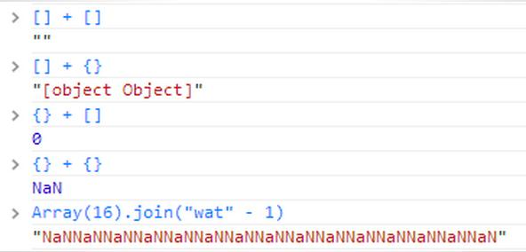

Grails in the JavaScript Age
Created by John Urberg
The JavaScript Age
Mike Driscol
http://metamarkets.com/2011/node-js-and-the-javascript-age
1991-1999: The HTML Age
Static documents were served to static clients
2000-2009: The LAMP Age
the dominant pattern was populating an HTML template with database values. Content was dynamic server-side, but still static client-side.
2010-??: The JavaScript Age
The JavaScript age is about event streams. Modern web pages are not pages, they are event-driven applications through which information moves.

Wat?
 https://www.destroyallsoftware.com/talks/watBut despite JavaScript's astonishing shortcomings, deep down, in its core, it got something very right. When you peel away the cruft, there is an expressive and powerful programming language there.
Douglas Crockford
http://javascript.crockford.com/popular.html
Java
⇩
Syntax
Scheme
⇩
First Class Functions
Closures
Self
⇩
Prototypes
Most applications are "Lamp Age" style applications
"Lamp Age" applications are increasingly using JavaScript on the client
JavaScript needs to be treated like any other language in your project.
- Modularization
- Code Quality
- Unit Tests
- Code Coverage
- Minification
- Bundling
Starting Example
Modularization
- Move JavaScript out of Markup
- Break into Modules
- Setup Grails Resources
Code Quality
JSLint
Static code analysis
- Require 'use strict'
- Require semicolons
- No global variables unless specified
- === instead of ==
- many more...
PhantomJS
Headless Webkit Browser
Grails Scripts
- Run PhantomLint.js thru PhantomJS
- Configure using LintConfig.js
- JSLint failure === build failure
Unit Tests
Jasmine
Unit Tests
- Create a tests/spec directory
- Create a TestRunner.html page
- Write Jasmine unit tests
Grails Scripts
- Use a PhantomJS script to run the TestRunner.html page (Jasmine XML Runner)
- Script should write results in JUnit XML format
- Jasmine failure === build failure
Coverage
JSCover
Obsfucation
Google Closure
Bundling
Grails Resource Plugin
Wrap Up
TO DO!